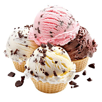
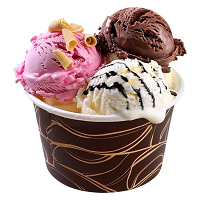

Ice cream is a beloved frozen dessert made from a blend of dairy, sweeteners, and flavorings.
It is churned and frozen to create a smooth, creamy texture that comes in hundreds of flavors,
from classic vanilla and chocolate to exotic fruit and nutty combinations.



Ice cream is a frozen dessert typically made from milk or cream that has been flavoured with a sweetener,
either sugar or an alternative, and a spice, such as cocoa or vanilla, or with fruit, such as strawberries or peaches.
Food colouring is sometimes added in addition to stabilizers. The mixture is cooled below the freezing point of water and
stirred to incorporate air spaces and prevent detectable ice crystals from forming. It can also be made by whisking a flavoured cream base and liquid nitrogen together.
The result is a smooth, semi-solid foam that is solid at very low temperatures (below 2 °C or 35 °F).
It becomes more malleable as its temperature increases.
Ice cream may be served in dishes, eaten with a spoon,
or licked from edible wafer ice cream cones held by the hands as finger food.